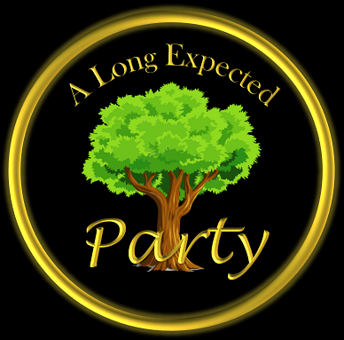
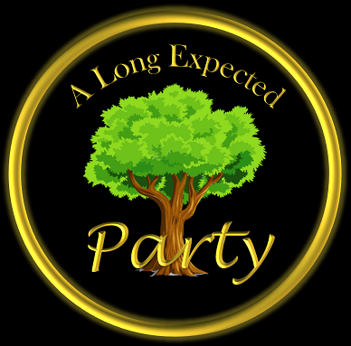

9:27 | Party set up: apples, bread, pastries, ale – There are platters of food on a table and a hobbit carrying jugs of a drink.
12:56 - 14:00 | Bag End: tea, grape juice, chicken, pickle, cheese, raspberry jam, apple tart, sponge cake, eggs, bread, tomato, toast, honey, muffin, bacon?, jerky? – There is so much in this scene; foods said by Bilbo and shown in his kitchen.
14:54 | Bag End : bread with butter – Bilbo talks about feeling like butter scraped over too much bread.
15:50 – 20:00 | Party: cake, apple, root beer, breads, pastries – These are shown all over the place on tables.
27:57 | Minas Tirith: Hot chocolate or sparkling grape juice - Gandalf takes a drink of something while researching.
31:33 | Bag End kitchen: Hot chocolate, apple – Frodo pours a hot drink, and apples are on the table.
34:52 - 35:00 | Bag End packing: apple, bread – Frodo packs apples and bread
38:16 | Traveling: hot chocolate (small cauldron cooking over fire) – Sam is cooking something over a fire.
39:41 | Orthanc: Sparkling grape juice: Gandalf and Saruman have goblets of wine.
43:53 | Farmer Maggot's field: Carrot, cabbage, potatoes, mushrooms – Merry and Pippin have carrots and cabbages, and talk about stealing potatoes and mushrooms. They also find mushrooms after falling onto the road.
50:16 | Bree: Carrot – Peter Jackson eating a carrot while the hobbits go through Bree.
51:36 | Prancing Pony: Root beer, bread, cheese – The hobbits are shown drinking ale and eating bread and cheese.
58:28| 2nd breakfast: Apple – Aragorn tosses a couple apples to Merry and Pippin after they try to stop for second breakfast.
1:01:03| Weathertop: tomato, sausage, bacon – They cook up some dinner under Weathertop.
1:16:53| Rivendale: Apple – Merry is eating an apple when they reunite with Frodo.
1:36:45 | Travelling: bread, sausage – Shows Sam handing Frodo a plate of bread, and then a skillet of sausage when they’re hurrying to hide.
1:45:52 | Doors of Moria: BBQ Ribs, root beer – Gimli talking about the hospitality of the dwarves.
2:29:16 | Falls of Rauros: Lembas– Pippin is shown chewing on something and considering they just left the elves we went with lembas.
Luncheon
5:20 | Emyn Muil: water, Lembas – Frodo and Sam take a break while traveling
22:16 | Maggoty bread: bread with nuts – Orc complaining about what they’ve had to eat.
22:58 | Meat's back: Meat – “Looks like meat’s back on the menu boys!” Enough said.
1:06:15 | Edoras: stew, bread, ham, cheese, root beer - The refugee children are eating stew and bread, Gimli is eating with ham, cheese, and ale shown on the table.
1:16:35 | Ithilien: Rabbit cracker, Stew, boiled potato, mashed potato, fish stick, French fries, sushi – Gollum takes a bite of raw rabbit, Sam makes a stew from them, they talk about potatoes, fish and chips, and raw fish.
1:50:32 | Forbidden pool: Sushi – Gollum eats some raw fish.
Dinner
5:26 | Smeagul's fish: Sushi, bread – Gollum eats some raw fish, talks about forgetting the taste of bread.
8:24 | Ruins: Lembas – Frodo has some lembas.
10:03 | Isengard: Bread, ham, root beer – Merry and Pippin are sitting and eating and drinking.
12:43 | 14:24 – Edoras: Lots of root beer, bread, cheese, ham – Tributary drinks followed by celebration with lots of drinking and food shown on the tables.
37:52 | Minas Tirith: grape juice – Gandalf takes a drink from a goblet.
49:13 | Edoras: - Hot chocolate or soup – Aragorn is drinking from a bowl.
59:42 | 1:08:54 - Minas Tirith: grapes, tomatoes, bread, chicken, sparkling grape juice – Denethor prepares his plate and eats it.
1:02:08 | Winding stairs: Lembas – Gollum crumbles the lembas and drops it.
1:14:22 | Dunharrow: bread, stew – Eomer and Gamling are eating when Eowyn and Merry come out of the tent.
1:40:29 | Winding stairs: Lembas – Sam finds the lembas that Gollum dropped.
2:19:24 | Orc tower: gruel/oatmeal/porridge – An orc is drinking from a bowl of what looks like some kind of gruel
2:28:02 | Mordor: Water – Frodo drinks some water.
2:35:08 | Mount Doom: Strawberries with whipped cream – Sam talks about them eating strawberries and cream in the Shire.
2:59:22 | Green Dragon: Root beer, pumpkin pie – The hobbits are drinking some ale while a big fuss is being made about a pumpkin in the background.
3:01:22 | Bag end: Hot chocolate – Frodo standing in Bag End taking a drink.
 
